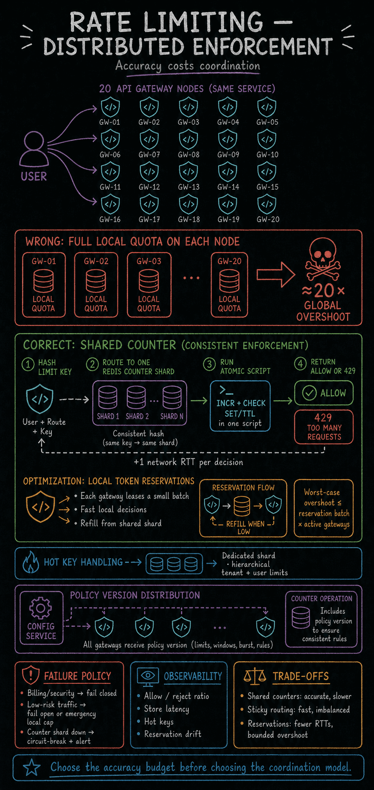

https://frosty110.github.io/js-drill/assets/system-design/infographics/components/c05/distributed-enforcement.pngRate limiting protects a service from overload and abuse by capping how many requests a client may make in a window. This section covers the four canonical algorithms (token bucket, leaky bucket, fixed-window counter, and the two sliding-window variants), where in the stack to enforce limits, how to do it accurately across a distributed fleet, and how the server signals a throttled client.
All questions, model answers and diagrams for Rate Limiting →